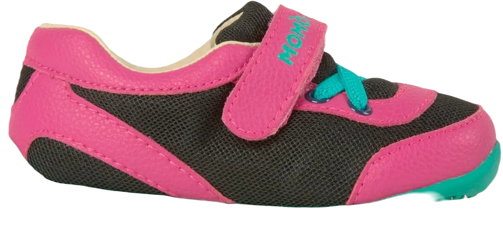
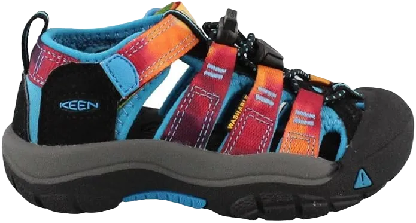
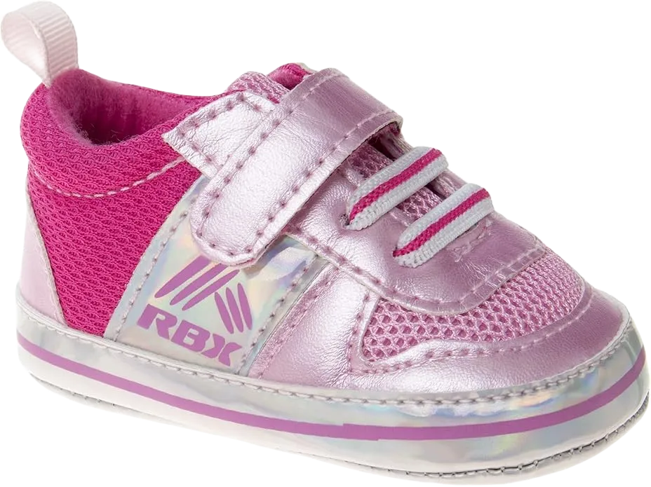
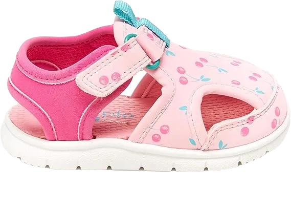
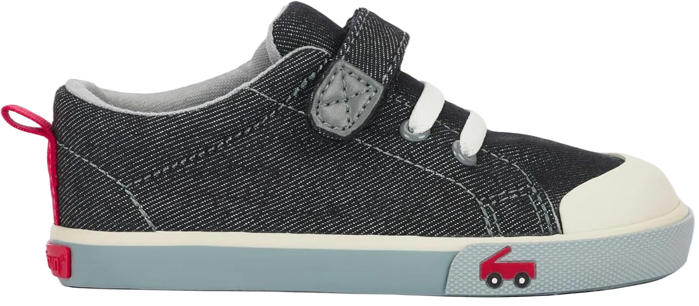
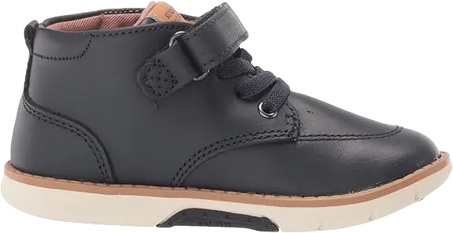
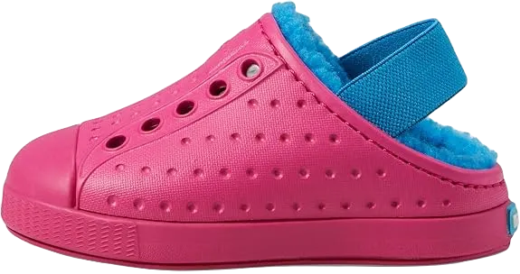

10 Best Shoes for 2 Year Old 2024
Your baby’s feet may be tiny, but they contain 35 joints and a complex system of muscles and nerves, just like ours. Once these little feet start determining their own pace, you may begin to wonder if it's time to introduce shoes into the mix.
With a variety of factors to keep in mind and numerous styles to choose from, it can be challenging to know which high-quality baby shoes are best. Here are some important considerations for selecting toddler shoes, including insights from three manufacturers and tips for moderation in choice.
-
#1
First children’s walking shoes
Leah and Hunter’s “First” shoes, featuring Baby Momo, are designed with the help of APMA and offer excellent foot flexibility. These shoes are crafted to assist your baby in shifting their weight from the lower back to the front of the shoe, improving daily walking patterns and overall movement.
The shoes provide an ideal balance of breathability and toe space, with added room thanks to a specially designed fan. Reviewers have noted that these shoes effectively bridge the gap between boat shoes and casual footwear, offering versatility and comfort.
However, there are some issues to consider. A significant percentage of parents have found that while these shoes are great for babies with small feet, they tend to run large. Some have also mentioned that while the shoes are initially a good fit, they may wear out and need replacing more quickly than expected. -
#2
New Balance for Kids’ 888 V2
.webp)
While many brands are gaining popularity, New Balance continues to stand out by offering a wide selection, including their 888 shoes. These shoes are especially favored for their ability to cater to larger feet, with one reviewer noting that their wide width accommodates leg length without the need for overly long shoes—making them ideal for children with broader feet.
Unique features of these shoes include a rubber outsole, impact-absorbing midsole, and a safety strap. One particularly happy reviewer praised the "XW girls' shoe with Velcro," highlighting how uncommon it is compared to other options like the Yeti.
Concerns to keep in mind: This is one of the more sturdy shoes on the market, but some reviewers noted that the Velcro straps can be too tight, which may cause discomfort. However, many parents agree that these shoes fit perfectly in length, making them a reliable choice for growing feet. -
#3
Small sandals in Newport shoes
Newport sandals are enthusiastically promoted for the summer season, and they’re perfect for both relaxing and tackling rugged terrain. These sandals feature a few adjustable elements, including straps and a hook-and-loop closure, ensuring a snug fit. They also come in a variety of vibrant colors, making them a fun choice for kids.
The durable synthetic outsole offers excellent protection for little feet, making these sandals ideal for active children. Other notable features include a rubber outsole, an impact-absorbing midsole, and a lightweight protective tape. One satisfied reviewer praised the sandals' Velcro closure, which they found larger and more functional than other similar options, like the Yeti.
Concerns: These sandals are generally more flexible than others on the market, but some reviewers noted that the Velcro straps can become worn out with heavy use. Despite this, many parents have found that these sandals hold up well and fit comfortably for an extended period of time. -
#4
Newport baby shoes
The Newport sandals are designed for the summer season with a mix of fun, practicality, and adventure in mind. These sandals feature a few adjustable elements, including straps and a hook-and-loop closure, ensuring a custom fit. They also come in a wide range of colors, making them both stylish and functional for kids.
The synthetic outsole provides complete protection for little feet, while also allowing for easy movement, even in water. Reviewers praise the safety and flexibility of the sandals from day one, noting that their adaptable design keeps even the most active kids happy.
Challenges: Some users have reported inconsistencies in sizing, so parents may need to pay extra attention when selecting the right size. Additionally, a few have found that these sandals can be difficult for older children to manage and remove on their own. -
#5
Sandals of the Salt Man
Saltwater sandals are as classic as they come. Their standout feature is a fine leather base, designed to mold to the foot while its jointed construction helps prevent slipping. These sandals are available in a variety of vibrant colors and textures, making them a versatile choice to complement any outfit.
Reviewers also appreciate that they are water-friendly, making them perfect for a spontaneous trip to the park or an afternoon paddle.
Concerns: Some reviewers have noted that these sandals may not be ideal for teens with slim feet. Sizing can also be inconsistent, especially compared to specialized manufacturers, so parents might need to try a few pairs to find the perfect fit. Additionally, some users mentioned that the buckle design leaves room for improvement, as it can cause discomfort for some wearers. -
#6
A small Orthopedic memo
.webp)
If your little one has a foot condition and you're looking for supportive footwear, consider the Memo shoe system. Recommended by pediatric orthopedic surgeons, Memo shoes are designed to prevent and correct foot abnormalities.
Beyond their orthopedic benefits, they are also stylish and come in a variety of patterns and colors. Reviewers rave about the effectiveness of Memo shoes, noting that they truly deliver on their promises.
Concerns: The cost of Memo shoes is a notable factor. While these shoes offer excellent quality, they come at a premium price, meaning you may get fewer pairs for your money. However, addressing foot problems early on can save you money in the long run. Be sure to consult your pediatrician to determine if these shoes are the right solution or if another option may be more suitable for your child’s needs. -
#7
See Kai Run Stevie II
All shoes from See Kai Run are thoughtfully designed with growing feet in mind, featuring wide toe boxes and flexible soles. This ensures that your little one's toes have the space and comfort they need while walking in both style and ease.
The Stevie II model stands out for its excellent craftsmanship, earning praise for its high-quality materials. These shoes come with a rubber outsole designed with a zigzag pattern for extra grip, along with stretchy faux laces that allow for a customized fit.
Challenges: While many reviewers find the shoes comfortable, some have noted that the materials can be a bit stiff, which may reduce comfort over time. Additionally, sizing can be inconsistent—some parents have found the shoes to run small, while others say they fit large. The key takeaway: keep your receipts handy in case an exchange is necessary. -
#8
Dadawen Athletic shoes
.webp)
Another popular option, these unisex Dadawen sneakers are designed with breathable mesh fabric and a rubber sole for enhanced comfort. The shoes are easy to slip on and secure with a single Velcro strap, making them convenient for parents and toddlers alike.
Reviewers often praise these sneakers for being a great value for the money, noting their balance of durability and lightweight design, which supports a toddler's natural walking stride.
Considerations: While these sneakers are a reliable choice, some users have noticed that they can develop holes or wear down more quickly with heavy use. A few parents suggest sizing up, as the breathable mesh material is better suited for warm, dry conditions and may not be as durable in harsher weather. -
#9
Stride rite M2P Indy
You can’t go wrong with Stride festival shoes, a brand renowned for its focus on foot development and the use of high-quality materials. The Indy shoes maintain this reputation, offering a range of sizes, including half sizes, along with options for standard widths that accommodate various foot shapes.
The hook-and-loop closure makes it easy to put the shoes on and take them off, ensuring a snug fit. Reviewers appreciate the durability of these shoes, noting they hold up well during mountain hikes. Many users also mention that these shoes can be tossed in the washing machine for easy cleaning.
Issues: Some parents have pointed out that the width options may not be sufficient for children with particularly wide feet, which might require exploring other styles. Additionally, a few have reported that the straps tend to wear out over time, affecting the overall fit. -
#10
Jefferson local shoes
Jefferson's best-selling local shoe is a favorite among parents, known for its vibrant colors and sleek design. These shoes are lightweight, dry quickly, and feature a rubber grip that helps prevent slips and falls.
Many reviewers praise them as "indestructible," noting that they can be tossed in the washing machine when muddy.
Concerns: It's important to pay attention to sizing with these shoes, as some users have found that they run slightly large. While they are intended to be worn with outdoor socks (making them suitable water shoes), a number of reviewers have reported that their teens experience blisters during extended wear.